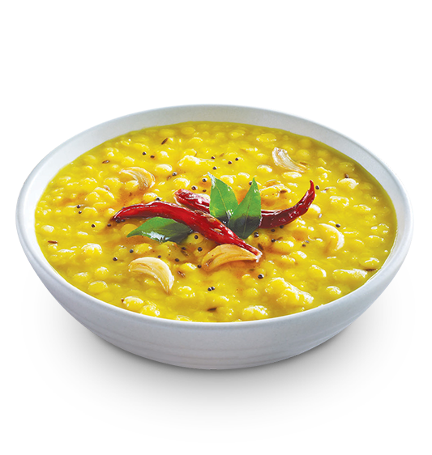

Odin Recipes

Parippu
Description
Paruppu Curry is a simple and nutritious South Indian lentil curry made with moong dal or toor dal, tempered with spices, and cooked with coconut for a rich flavor. It is often served with rice and makes a comforting everyday meal.
Ingredients
- 1 cup moong dal or toor dal
- 1/2 tsp turmeric powder
- 1–2 green chilies, slit
- 1 small tomato, chopped
- Salt to taste
- 2 tbsp grated coconut (optional)
- 2 tbsp oil
- 1 tsp mustard seeds
- 1/2 tsp cumin seeds
- 2 dried red chilies
- A few curry leaves
- Fresh coriander for garnish
- 4 cups water
Steps
- Rinse the dal and cook it with turmeric in water until soft and mushy.
- Add chopped tomato, slit green chilies, and salt; simmer for 5 minutes.
- If using, grind grated coconut into a paste and add to the dal; mix well.
- Heat oil for tempering, add mustard seeds, cumin, dried red chilies, and curry leaves; fry until aromatic.
- Pour the tempering into the dal and stir gently.
- Garnish with fresh coriander leaves.
- Serve hot with steamed rice.
Home